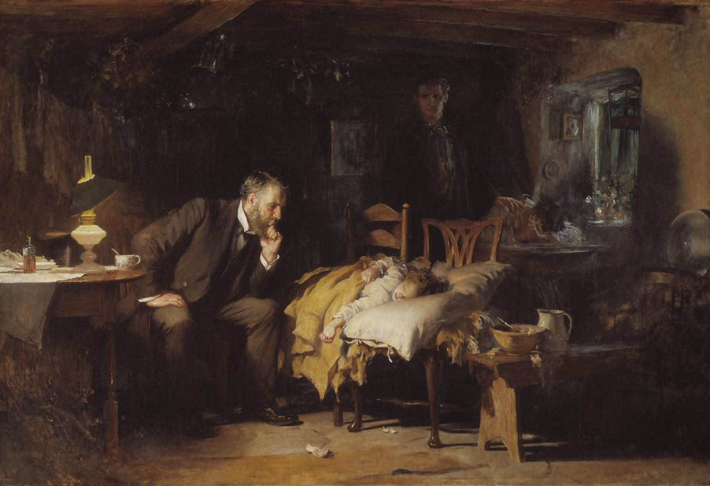

Omsorg, autonomi og dødshjelp
Hva er god omsorg, og hvem bestemmer?
Pettersen (2011), Pedersen (2025) og Magelssen (2025)
Luke Fildes: «The Doctor», 1891
- En lege våker over et sykt barn i et fattig hjem. Foreldrene venter i bakgrunnen
- Fildes mistet selv sønnen sin i 1877, og husket legen som tok seg av ham
- Omsorg som oppmerksomhet og nærvær (FLA 2). Men hvem bestemmer: barnet, foreldrene eller legen? (FLA 4–9)
Kilde: Luke Fildes, The Doctor (1891), Tate, London. Public domain, via Wikimedia Commons

Samme opplegg som forrige uke
- Én del per FLA-spørsmål, nå ni, ett om gangen
- Hver del: spørsmålet, et eksempel, så lagquiz på mobilen
- Lagquiz som sist: alene først, så laget, og én svarer for laget (4/3/2/1 poeng)
- Flervalgene er de samme som i FLA-dokumentet. På mobilen er A–D nummerert 1–4
- Etter hvert FLA-flervalg kommer et ekstra flervalg, nå om samme tema. Svareren går selv videre; de andre trykker «Neste spørsmål» når laget er ferdig. Mobilen sier «gir ikke poeng», men ekstrapoengene teller i en egen tavle
Bli med i avstemningen
Én gang for hele timen.
Én i hver gruppe svarer for laget: velg det og skriv lagnavn når du blir med.
Fra sykdom til omsorg og selvbestemmelse
- Uke 41: teknologien former oss. Uke 42: hvem bestemmer hva som er sykdom?
- I dag: hvem bestemmer når man er syk, og hva er god omsorg?
- Pettersen: omsorg og rettferdighet. Pedersen: når bestemmer pasienten?
- Magelssen: gjelder selvbestemmelsen også døden?
FLA 43: de ni spørsmålene
Pasientautonomi (Pedersen)
4 Hvorfor respektere autonomi?5 Informert samtykke6 Å vurdere beslutningskompetanseKlikk for å gå dit. Tilbake hit: lenken øverst til høyre på hvert spørsmål.
Deskriptiv eller normativ?
Er omsorgsetikken en deskriptiv eller en normativ etikk? Begrunn svaret (se særlig ss. 132–134).
Hvor i pensum: Pettersen, «Forholdet mellom omsorg, kjønn og etikk» (ss. 133–134), med Gilligans funn (ss. 120–124) og «Omsorg og kjønn» (ss. 127–130) som bakgrunn
Relevante begreper: «deskriptiv vs normativ etikk» (uke 35); «rettferdighetsperspektiv vs. omsorgsperspektiv (moralsk stemme)» (uke 39).
Se etter i teksten: deskriptiv etikk og normativ etikk (s. 133); «feilkobling» (s. 133); Gilligans empiriske funn og kritikken av utvalget (s. 128); «moralfilosofi og etikk ikke eksisterer uavhengig av kontekst» (ss. 133–134)
Er omsorg en kvinnedyd?
Eksempelet
- Hume: kyskhet og anstendighet er «kvinnedyder», fordi det er nyttig for samfunnet (ss. 117–120)
- Kohlberg målte jentene som mindre moralsk modne enn guttene (s. 121)
- Gilligan: jentene resonnerer ikke dårligere, men annerledes (s. 123)
- I dag er omtrent ni av ti sykepleiere kvinner
Hva viser eksempelet?
- Deskriptivt: hvem som faktisk vektlegger omsorg
- Normativt: om omsorg er noe vi bør vektlegge
- «Feilkobling»: at en gruppe har verdiene, avgjør ikke om de er gode (s. 133)
- Bro til uke 35: man slutter ikke fra er til bør
Pettersen kaller det en «feilkobling» å støtte eller forkaste et sett av verdier på ett bestemt grunnlag. Hvilket?
Pettersen s. 133 · på mobilen er A–D nummerert 1–4
Poengtavle, FLA
Lagquiz 1 (FLA 1): resultat
Alene
Lagenes første valg
Poeng
Se på følgende argument. «Veganisme er meningsløst ettersom mennesker har spist kjøtt i tusenvis av år». Hvorfor er dette argumentet problematisk?
FVO etikk (uke 35–37), spm. 2 · på mobilen er A–D nummerert 1–4
Poengtavle, ekstra
Ekstra 1: resultat
Alene
Lagenes første valg
Poeng
Hva krever omsorg?
Hvilke egenskaper er viktige for å utøve omsorg, ifølge Pettersen (ss. 137–138)?
Hvor i pensum: Pettersen, «Tradisjonelle epistemologiske forutsetninger utfordres» (ss. 136–138)
Relevante begreper: «rettferdighetsperspektiv vs. omsorgsperspektiv (moralsk stemme)» (uke 39); «dyd (def.)» (uke 37).
Se etter i teksten: prinsippet om sårbarhet (s. 137); kontekstuell sensitivitet; å lytte, forestillingsevne, medfølelse, oppmerksomhet og refleksjon (ss. 137–138); «dobbelkompetansen» (s. 138)
Hjemmesykepleieren og Arne
Eksempelet
Arne (82) bor alene og vil ikke ha hjelp til å dusje. Lista er lang, men sykepleieren setter seg ned og spør hvordan han har det. Hun merker at han skammer seg over å trenge hjelp. Neste gang foreslår hun at han vasker seg selv mens hun venter på kjøkkenet.
Hva viser eksempelet?
- Å lytte og være oppmerksom: hun ser hva som står på spill for Arne (s. 138)
- Forestillingsevne og medfølelse: hvordan er det å være ham? (s. 138)
- Prinsippet om sårbarhet: den mest sårbare skal få mest hensyn (s. 137)
- Refleksjon: både regelen (hygiene) og situasjonen, «dobbelkompetansen» (s. 138)
Hvordan tilegner man seg moralsk kunnskap i omsorgsetikken, ifølge Pettersen?
Pettersen s. 138 · på mobilen er A–D nummerert 1–4
Poengtavle, FLA
Lagquiz 2 (FLA 2): resultat
Alene
Lagenes første valg
Poeng
Hva er ifølge en dydsetiker grunnlaget for moralsk bedømmelse?
FVO etikk (uke 37), spm. 5 · på mobilen er A–D nummerert 1–4
Poengtavle, ekstra
Ekstra 2: resultat
Alene
Lagenes første valg
Poeng
Omsorg og rettferdighet
Hvordan skiller omsorgsperspektivet seg fra rettferdighetsperspektivet? Bruk gjerne Pettersens tabell (s. 126) og eksemplet med Jake og Amy (ss. 121–123).
Hvor i pensum: Pettersen, «Gilligan og Kohlberg, Jake og Amy» (ss. 121–124), «To moralske perspektiver» med tabellen (ss. 124–126) og «Den psykologiske forklaringen» (s. 127)
Relevante begreper: «rettferdighetsperspektiv vs. omsorgsperspektiv (moralsk stemme)» (uke 39); «pliktetikk (også kalt deontologi)» (uke 36).
Se etter i teksten: Heinz’ dilemma; Jakes og Amys svar (ss. 121–123); tabellen (s. 126): kjerneverdi, beslutningsgrunnlag, fremgangsmåte, utgangspunkt, arena, aktøren; relasjonelt og isolert selv (s. 127)
Heinz, Jake og Amy
Eksempelet
- Heinz har ikke råd til medisinen som kan redde kona. Bør han stjele den? (s. 121)
- Jake (11): et liv kan ikke måles i penger, så Heinz bør stjele (s. 122)
- Amy (11): kan han ikke låne pengene? Og hva skjer med kona hvis han havner i fengsel? (ss. 122–123)
Hva viser eksempelet?
- Jake: rettferdighetsperspektivet. Han rangerer to regler og utleder svaret (s. 122)
- Amy: omsorgsperspektivet. Hun ser relasjonene og konteksten (s. 123)
- Tabellen: kjerneverdi, beslutningsgrunnlag, fremgangsmåte, aktøren (s. 126)
- De fleste omsorgsetikere i dag: begge perspektivene trengs (s. 126)
Gilligan forklarer de to perspektivene med at jenter og gutter tenderer mot å utvikle ulike selv. Hva kjennetegner et «relasjonelt selv»?
Pettersen s. 127 · på mobilen er A–D nummerert 1–4
Poengtavle, FLA
Lagquiz 3 (FLA 3): resultat
Alene
Lagenes første valg
Poeng
Hvilket av de følgende alternativene uttrykker en vanlig innvending mot utilitarismen?
FVO etikk (uke 36), spm. 4 · på mobilen er A–D nummerert 1–4
Poengtavle, ekstra
Ekstra 3: resultat
Alene
Lagenes første valg
Poeng
Hvorfor respektere autonomi?
Hvordan kan pasientens autonomi eller selvbestemmelse begrunnes ut ifra pliktetikk og konsekvensetikk (s. 62)? Er det noen forskjeller i måten de to etiske teoriene begrunner pasientautonomi på?
Hvor i pensum: Pedersen, «Det etiske grunnlaget for å vektlegge autonomi»: «Pliktetikken» og «Konsekvensetikken» (s. 62), «Diskursetikken» (s. 63)
Relevante begreper: «autonomi» (uke 36); «humanitetsformuleringen» (uke 36); «nytteprinsippet» (uke 36); «diskursetikk» (uke 39).
Se etter i teksten: det innledende eksempelet (s. 61); paternalisme (s. 62); «selvlovgivende», mål og middel (s. 62); Mill og nytten av frihet (s. 62); «kraften i det bedre argument» (s. 63)
Kvinnen med klumpen i brystet
Eksempelet
En kvinne på 86 år bor på sykehjem og har moderat kognitiv svikt. På grunn av en klump i det ene brystet blir hun henvist til sykehuset. Der sier hun at hun verken vil utredes eller behandles.
Hva viser eksempelet?
- Pliktetikk: hun er «selvlovgivende» og skal behandles som et mål, ikke bare som et middel (s. 62)
- Konsekvensetikk: kanskje veier ulempene ved utredning tyngre enn nytten for henne (s. 62)
- Diskursetikk: hun er berørt, så hun må få komme til orde (s. 63)
- Forskjellen: plikten gjelder uansett utfall; nytten avhenger av utfallet
Pedersen nevner også diskursetikken (Habermas). Hva skal ifølge diskursetikken veie tyngst i en beslutningsprosess?
Pedersen s. 63 · på mobilen er A–D nummerert 1–4
Poengtavle, FLA
Lagquiz 4 (FLA 4): resultat
Alene
Lagenes første valg
Poeng
Begrepet "autonomi" stammer fra gresk og gir en viktig forståelse av hva pasientautonomi innebærer. Hva er den korrekte etymologiske betydningen?
FVO helseetikk, kap. 5, spm. 6 · på mobilen er A–D nummerert 1–4
Poengtavle, ekstra
Ekstra 4: resultat
Alene
Lagenes første valg
Poeng
Informert samtykke
Hva menes med «informert samtykke»? Gjør rede for de tre kravene som må være oppfylt for at et samtykke skal være gyldig (ss. 65–66).
Hvor i pensum: Pedersen, «Informert samtykke» med de tre kravene (s. 65), «Informasjon», «Beslutningskompetanse» og «Frivillighet» (ss. 65–66) og «Mer om det informerte samtykket» (ss. 66–67)
Relevante begreper: «informert samtykke» (uke 39); «beslutningskompetanse» (uke 39); «paternalisme» (uke 44).
Se etter i teksten: de tre kravene (s. 65); kunden i nettbutikken og «den gylne middelvei» (s. 65); press, trusler og manipulasjon (s. 66); paternalisme, og å la pasienten bestemme for mye (s. 66); de to betydningene av beslutningskompetanse (s. 67)
Nettbutikk, formynder eller samarbeid?
Eksempelet
- Ytterpunkt 1: helsepersonell gir bare informasjon, og pasienten velger som en kunde i en nettbutikk
- Ytterpunkt 2: helsepersonell avgjør hva som er best, og gir bare informasjon som får pasienten til å si ja
- Middelveien: de utforsker sammen, og helsepersonell gir råd ut fra det som er viktig for pasienten
Hva viser eksempelet?
- Krav 1, informasjon: har pasienten forstått, ikke bare fått? (s. 65)
- Ytterpunkt 2 er paternalisme: informasjon og frivillighet svikter (s. 66)
- Krav 3, frivillighet: press, trusler eller manipulasjon gjør samtykket ugyldig (s. 66)
- Bro til uke 39: kravet kom med Nürnbergkodeksen etter krigen (s. 63)
Et av kravene er at pasienten er beslutningskompetent. Begrepet har to betydninger. Hva er den første?
Pedersen s. 67 · på mobilen er A–D nummerert 1–4
Poengtavle, FLA
Lagquiz 5 (FLA 5): resultat
Alene
Lagenes første valg
Poeng
Etter andre verdenskrig og frem til det siste tiåret ble det etablert viktige retningslinjer for forskningsetikk som respons på overgrep begått i navn av medisinsk forskning. Hvilket dokument kom først i denne utviklingen?
FVO helseetikk, kap. 19, spm. 22 · på mobilen er A–D nummerert 1–4
Poengtavle, ekstra
Ekstra 5: resultat
Alene
Lagenes første valg
Poeng
Å vurdere beslutningskompetanse
Hvordan kan en pasients beslutningskompetanse vurderes? Bruk FARV-kriteriene (s. 69), og forklar hvorfor pasientens diagnose ikke er det avgjørende (s. 70).
Hvor i pensum: Pedersen, «Hvordan vurdere beslutningskompetanse?» med FARV-kriteriene (s. 69) og fortsettelsen (s. 70); pasienter som mangler beslutningskompetanse (s. 68)
Relevante begreper: «FARV-kriteriene» (uke 39); «beslutningskompetanse» (uke 39); «forskjell mellom nødvendig og tilstrekkelig betingelse for sykdom» (uke 38).
Se etter i teksten: FARV: forstå, anerkjenne, resonnere, velge (s. 69); «pasientens diagnose ikke er det avgjørende» (s. 70); uenighet er ikke manglende kompetanse (s. 70); kompetansen kan variere fra time til time (s. 70); pårørende og § 4-6 (s. 68)
FARV for kvinnen på sykehjemmet
Eksempelet
- Forstå: kan hun gjengi hva utredningen går ut på?
- Anerkjenne: ser hun at klumpen gjelder henne selv?
- Resonnere: kan hun veie alternativene, også det å ikke gjøre noe?
- Velge: kan hun uttrykke et valg, med eller uten ord?
Hva viser eksempelet?
- Kognitiv svikt, sykehjem eller demens avgjør ikke saken alene (s. 70)
- At hun er uenig med legen, betyr ikke at hun mangler kompetanse (s. 70)
- Kompetansen kan variere fra time til time: vurder henne på sitt beste (s. 70)
- Uke 42: diagnosen er ikke en tilstrekkelig betingelse for å mangle kompetanse
En pasient over 18 år blir vurdert til å mangle beslutningskompetanse. Hva skal nærmeste pårørende som hovedregel spørres om?
Pedersen s. 68 · på mobilen er A–D nummerert 1–4
Poengtavle, FLA
Lagquiz 6 (FLA 6): resultat
Alene
Lagenes første valg
Poeng
En bioingeniør skal ta en venøs blodprøve fra en pasient med mistanke om diabetes. Pasienten virker nervøs og sier "jeg skjønner ikke helt hvorfor dere må ta så mye blod, men greit da, bare ta prøven". Bioingeniøren forklarer ikke nærmere, men tar prøven raskt. Hvilket av følgende er IKKE et problem for pasientens beslutningskompetanse i denne situasjonen?
FVO helseetikk, kap. 5, spm. 7 · på mobilen er A–D nummerert 1–4
Poengtavle, ekstra
Ekstra 6: resultat
Alene
Lagenes første valg
Poeng
Dødshjelp og behandlingsbegrensning
Hva skiller dødshjelp fra såkalt behandlingsbegrensning (ramme 1, s. 8), og hvorfor mener Magelssen at dette skillet er viktig (ss. 15–17)?
Hvor i pensum: Magelssen, ramme 1 (s. 8) og «Dødshjelp og behandlingsbegrensning» (ss. 15–17)
Relevante begreper: «dødshjelp» (uke 39); «behandlingsbegrensning» (uke 39); «pliktetikk (også kalt deontologi)» (uke 36); «utilitarismen» (uke 36).
Se etter i teksten: eutanasi, assistert selvmord og behandlingsbegrensning (ramme 1); «passiv dødshjelp» (s. 16); pasienten med hjemmerespirator (s. 16); intensjon, utførelse og medikamentbruk (s. 16); Gamlund og ALS (ss. 16–17); uaktsomt og forsettlig drap (s. 17)
Respiratoren og giftsprøyten
Eksempelet
- En pasient med hjemmerespirator vil ikke ha behandlingen lenger. Hun har rett til at den avsluttes, selv om hun da dør (s. 16)
- Ved eutanasi injiserer helsepersonell dødbringende medikamenter, på pasientens forespørsel (ramme 1, s. 8)
Hva viser eksempelet?
- Årsak: ved behandlingsbegrensning dør pasienten først og fremst av grunnsykdommen (s. 16)
- Intensjon: å avstå fra behandling som ikke hjelper, ikke å ta liv (s. 16)
- M&S ser «en helt reell likhet». Magelssen: «en fortegnet fremstilling» (s. 16)
- Uke 36: teller intensjonen (pliktetikk), eller bare utfallet (utilitarisme)? Jf. uaktsomt og forsettlig drap (s. 17)
En lege skaffer til veie dødbringende medikamenter som pasienten, på egen forespørsel, inntar selv. Hva er dette, ifølge definisjonene hos Magelssen?
Magelssen s. 8 · på mobilen er A–D nummerert 1–4
Poengtavle, FLA
Lagquiz 7 (FLA 7): resultat
Alene
Lagenes første valg
Poeng
En 85 år gammel pasient med avansert kreft og bare uker igjen å leve, utvikler lungebetennelse. Teamet diskuterer om pasienten skal behandles med antibiotika og væske intravenøst, eller om man skal fokusere kun på symptomlindring. Hvilke begreper er mest relevante for denne diskusjonen?
FVO helseetikk, kap. 10, spm. 11 · på mobilen er A–D nummerert 1–4
Poengtavle, ekstra
Ekstra 7: resultat
Alene
Lagenes første valg
Poeng
Den glidende hollender
Magelssen nevner fem trender som innebærer utvidelse (Magelssen kaller det utglidning) av dødshjelpordningen i land hvor dødshjelp praktiseres (ss. 19–20). Hva går disse trendene ut på? Bør disse trendene være med i vurderingen når man diskuterer legalisering her i Norge? Og hvis ja, hvorfor?
Hvor i pensum: Magelssen, «Spor 5» (s. 17) og «Den glidende hollender» (ss. 19–20); bakgrunn: «“Uutholdelig lidelse” som vagt kriterium» (ss. 17–19)
Relevante begreper: «glidebaneargumentet» (uke 39); «deduksjon vs. induksjon» (uke 35).
Se etter i teksten: de to trendene M&S nevner og de tre Magelssen legger til (ss. 19–20); Theo Boer; fra 1 % (1990) til 8 % (2015); «dødshjelpsklinikken» (2012); Belgia; 5,1 % av alle dødsfall (s. 19)
Erfaringer fra Nederland og Belgia
Eksempelet
- Nederland: dødshjelp i 5,1 % av alle dødsfall (s. 19)
- Andelen med over et halvt år igjen å leve: fra 1 % i 1990 til 8 % i 2015 (s. 20)
- 2012: egen «dødshjelpsklinikk», som åpner for «doctor shopping» (s. 20)
- Belgia: pårørende ser oftere livets siste fase som meningsløs og uverdig (s. 20)
Hva viser eksempelet?
- Glidebaneargumentet: ett skritt gjør det neste sannsynlig
- Induktivt, ikke deduktivt: erfaringene gjør utglidning sannsynlig, ikke sikker (uke 35)
- Relevant for Norge fordi M&S foreslår kriterier tett opp til de nederlandske (s. 17)
- Motargument: kan en norsk lov skrives strengere?
Hva skjedde i Nederland i 2012, ifølge Magelssen?
Magelssen s. 20 · på mobilen er A–D nummerert 1–4
Poengtavle, FLA
Lagquiz 8 (FLA 8): resultat
Alene
Lagenes første valg
Poeng
Når det gjelder holdninger til dødshjelp i Norge, hvordan ser forholdet ut mellom legers og befolkningens støtte?
FVO helseetikk, kap. 10, spm. 10 · på mobilen er A–D nummerert 1–4
Poengtavle, ekstra
Ekstra 8: resultat
Alene
Lagenes første valg
Poeng
Selvbestemmelsesargumentet
I debatten om dødshjelp har pasienters selvbestemmelse en fremtredende plass. Hvilke styrker og svakheter ser du ved selvbestemmelsesargumentet i denne sammenhengen (ss. 10–12)?
Hvor i pensum: Magelssen, «Spor 2: Retten til å bestemme over egen død, og selvbestemmelsens grenser» (ss. 10–12)
Relevante begreper: «autonomiargumentet» (uke 39); «pasientautonomi» (uke 39); «informert samtykke» (uke 39).
Se etter i teksten: «Hvem er da bedre plassert til å vurdere dette enn personen selv?» (s. 10); «en individuell løsning» på «et strukturelt problem» (s. 10); fire former for press (ss. 10–11); Hirsch (s. 11); «den andre bølgen» (ss. 11–12)
Dødshjelpsdebatten i Stortinget nå
Eksempelet
- Mars 2026: Venstre foreslo å utrede «selvbestemt livsavslutning»
- Bakgrunn: «Rikkes lov», og nordmenn som har reist til Sveits for å dø
- Helse- og omsorgskomiteen skal avgi innstilling innen 3. november 2026
Hva viser eksempelet?
- Styrke: hvem er bedre plassert til å vurdere livet sitt enn personen selv? (s. 10)
- Svakhet: dødshjelp kan bli en individuell løsning på et strukturelt problem (s. 10)
- Press, også subtilt: ønsket om å dø formes av omgivelsene (ss. 10–11)
- «Den andre bølgen»: valget tas i en kultur der dødshjelp er normalt (ss. 11–12)
Magelssen (delvis med støtte fra Moen og Sterri) advarer mot at dødshjelp kan bli «en individuell løsning» på «et strukturelt problem». Hva menes med det?
Magelssen s. 10 · på mobilen er A–D nummerert 1–4
Poengtavle, FLA
Lagquiz 9 (FLA 9): resultat
Alene
Lagenes første valg
Poeng
John Stuart Mill formulerte et skadeprinsipp som er sentralt i diskusjoner om når staten kan gripe inn i individers liv. Hvilket svaralternativ er den beste måten å oppsummere Mills skadeprinsipp?
FVO helseetikk, kap. 14, spm. 16 · på mobilen er A–D nummerert 1–4
Poengtavle, ekstra
Ekstra 9: resultat
Alene
Lagenes første valg
Poeng
Poengtavlene
De ni FLA-spørsmålene
De ni ekstraspørsmålene
Takk for i dag!
Northwestern Glacier, Kenai Fjords, Alaska. Foto: CROCKERBD, CC BY-SA 4.0